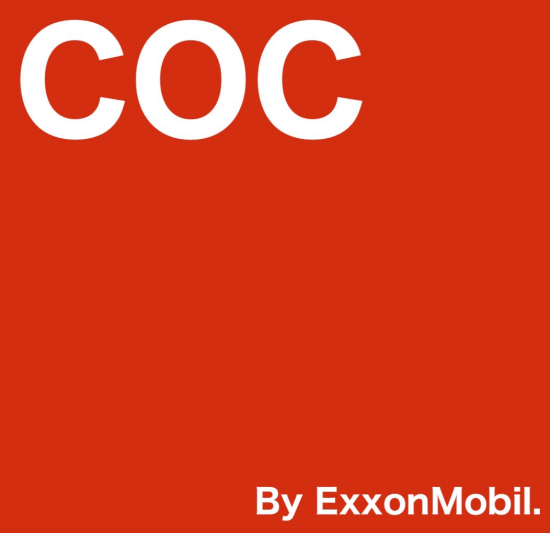

Çüngoland Oil Company (COC)
Çüngoland Oil Company (COC)
Kurulma Tarihi
17 Nisan 1932
Çüngoland Oil Company (COC) 17 Nisan 1932 Tarihinde kurulmuştur. Daha önceleri ismi Standard Oil olan ve günümüzde ExxonMobil e ait olan Esso’nun Çüngoland’e özel yeni bir markası olarak doğdu. Daha önceleri tamamen ExxonMobil’e ait olan şirketin ismi 1990 yılında Mobil Çüngoland oldu ve 2014 yılına kadar öyle kaldı. 2014 yılında ise yerli yatırımcı buldu ve Çüngoland Petroleum ismini alacak iken Çüngoland Oil Company olarak son ismini almış oldu. Günümüzde Çüngoland’deki akaryakıt istasyonlarının çoğu COC dur. Ayrıca motorsporlarında Çüngo Motors WRC takımı ve Çüngo Motors Racing F1 takımının ana sponsorlarındandır. Ham petrol ExxonMobil tarafından sağlanmaktadır. Rafineri ve iç dağıtım ise COC’a aittir. Ayrıca COC Express isimli yerel istasyonları da bulunur.
Çüngoburg'da Bulunan Bir Tane Çüngoland Oil Company (COC) Akaryakıt İstasyonu